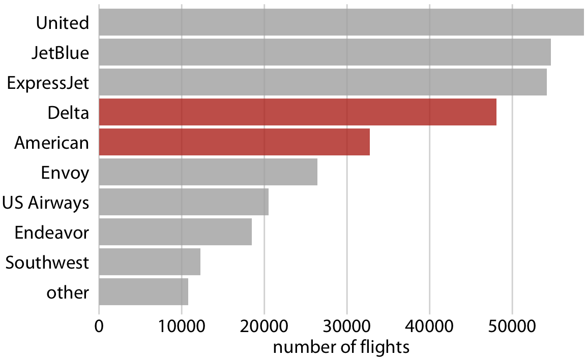

- 시각화에서 색은 매우 중요한 요소입니다.
- 중요 데이터를 강조하기 위해 특정 영역의 색을 다르게 지정하기도 합니다.
- HLS 색공간을 사용해 특정 데이터만 강조합니다.
1. 중요 데이터 강조
아래 그림은 데이터 시각화 교과서에 수록된 데이터 강조 사례입니다.
여러 항공사 중 Delta와 American만 강조되어 있습니다.
중요한 데이터만 유채색으로, 그렇지 않으면 무채색으로 처리하면 우리 눈에 잘 들어옵니다.
데이터를 강조하는 가장 간단하면서도 정석적인 방법입니다.
하지만 막상 코드로 구현하려면 다소 성가십니다. bar마다 다른 색을 지정해야 하기 때문입니다.
2. HLS color space
2.1. 유채색과 무채색
- 유채색과 무채색의 차이는 간단합니다.
- 색을 이루는 구성 요소, 명도(Lightness), 색상(Hue), 채도(Saturation) 중 명도만 있으면 무채색입니다.
- 조금 더 정확히 말하면, 채도가 0이 되어 색상이 드러나지 않으면 무채색이 됩니다.
- 채도를 아주 살짝 남기면 색상만 약하게 전달할 수 있습니다.
2.2. set_hls()
색 데이터와 함께 HLS 공간에서의 수정 내역을 입력받아 바뀐 색을 출력하는 함수를 만듭니다.
색을 제어하는
matplotlib.colors모듈과 함께 python 기본 라이브러리colorsys를 사용합니다.1
2
3
4
5
6
7
8
9
10
11
12
13
14
15
16
17
18
19
20
21
22
23
24
25
26
27
28
29
30
31import matplotlib.colors as mcolors
import colorsys
def set_hls(c, dh=0, dl=0, ds=0, dalpha=0):
"""
c : (array -like, str) color in RGB space
dh : (float) change in Hue
default = 0
dl : (float) change in Lightness
default = 0
ds : (float) change in Saturation
default = 0
"""
# 입력된 color를 RGBA numpy array로 변환
c_rgba = mcolors.to_rgba(c)
# RGB와 alpha 분리
c_rgb = c_rgba[:3]
alpha = c_rgba[3]
# RGB 색공간을 HLS 색공간으로 변환 후 입력된 변화 적용
c_hls = colorsys.rgb_to_hls(*c_rgb)
h = c_hls[0] + dh
l = max(min(c_hls[1] + dl, 1), 0) # 0~1 범위를 넘지 않도록 제어
s = max(min(c_hls[2] + ds, 1), 0) # 0~1 범위를 넘지 않도록 제어
# HLS 색공간에서 변경된 색을 RGB 색공간으로 변환
c_rgb_new = colorsys.hls_to_rgb(h, l, s)
alpha = max(min(alpha+dalpha, 1), 0) # 0~1 범위를 넘지 않도록 제어
return np.append(c_rgb_new, alpha) # alpha 추가하여 return구성은 간단합니다.
RGB 색공간에서 정의된 색을 색상, 명도, 채도 변화량과 함께 입력받고,
HLS 공간으로 변환해서 원하는 변화를 적용하고, 다시 RGB 색공간으로 변환시켜
return합니다.mcolors.to_rgba()명령으로 색 이름을 처리했기 때문에 array-like, string, hex code를 모두 인식합니다.Hue는 무한 순환하지만 Lightness와 Saturation은 그렇지 않습니다. 범위를 넘지 않도록 제어합니다.
만약 입력 색에 alpha 채널이 있어 불투명도가 지정되어 있다면, 이를 따로 떼었다가 마지막에 다시 붙입니다.
2.3. bar plot 적용
펭귄 데이터셋을 예제로 bar plot을 이렇게 강조해 봅니다.
Adelie, Chinstrap, Gentoo 세 펭귄의 데이터 수를 seaborn의
countplot함수로 표현합니다.1
2
3
4df_peng = sns.load_dataset("penguins")
fig, ax = plt.subplots(figsize=(5, 3), constrained_layout=True)
sns.countplot(y="species", data=df_peng, ax=ax)Gentoo 데이터만 강조합시다.
우리의
set_hls()를 사용할 차례입니다.세 개의 bar 중 처음 두 개는 명도+0.5, 채도-0.3를 적용하고, Gentoo는 채도+0.2를 합니다.
1
2
3
4
5
6
7
8for i, p in enumerate(ax.patches):
if i < 2:
fc = set_hls(p.get_fc(), dl=0.4, ds=-0.3)
else:
fc = set_hls(p.get_fc(), ds=0.2)
p.set_fc(fc)
display(fig)sns.countplot()에palette매개변수로 각 bar별 색을 따로 지정할 수도 있습니다.그러나 이 경우 bar가 많으면 일일이 입력하기 어렵고,
sorting 등으로 순서가 바뀌면 일일이 순서를 바꿔줘야 하고
회색을 쓰지 않고 색상을 살짝 남기려면 RGB 공간에서 적당한 색을 찾기가 어렵습니다.
하는 김에 한 단계 더 들어갑니다.
불필요한 spines와 ticks를 제거하고 데이터 값을 bar에 직접 박아 넣습니다.
1
2
3
4
5
6
7
8
9
10
11ax.spines[["top", "right", "bottom"]].set_visible(False)
ax.set(xticks=[], xlabel="", ylabel="")
ax.set_title("count (species)", color="gray", fontweight="bold")
for i, p in enumerate(ax.patches):
x, width = p.get_x(), p.get_width()
c = "gray" if i < 2 else "w"
ax.text(width-3, i, f"{width}", c=c,
ha="right", va="center", fontweight="bold")
display(fig)시각화 지침서에 나오는 모범 사례에 조금은 더 가까워진 듯 합니다.
2.4. KDE plot 적용
같은 책에는 이런 그림도 있습니다.
승객의 연령과 성별을 누적 분포로 그린 그림입니다.
bar plot보다 난이도가 조금 더 높게 느껴집니다.

이번에는 이런 그림에 도전합니다.
seaborn의kdeplot()을 사용해 Male과 Female이 아래에 위치한 누적 분포를 그립니다.윤곽선을 없애기 위해
linewidth=0을 입력하고,배색과 hue_order를 데이터가 위에서 아래로 쌓이는 순서대로 입력합니다.
1
2
3
4
5
6
7
8
9fig, axs = plt.subplots(ncols=2, figsize=(10, 4), constrained_layout=True,
sharex=True, sharey=True)
sns.kdeplot(x="body_mass_g", data=df_peng, multiple="stack",
palette=["lightgray", "C0"], alpha=1, linewidths=0,
hue="sex", hue_order=["Female", "Male"], ax=axs[0])
sns.kdeplot(x="body_mass_g", data=df_peng, multiple="stack",
palette=["lightgray", "C1"], alpha=1, linewidths=0,
hue="sex", ax=axs[1])ticklabels, label, title, spines, grid 등을 차례로 수정합니다.
불필요한 요소는 제거하고 필요한 요소는 추가합니다.
애초에
sns.kdeplot()안에legend=False를 입력하면 legend가 생기지 않습니다.그러나 일단 생성된 legend를 제거하려면
Axes.get_legend()로 접근해서.remove()를 실행해야 합니다.1
2
3
4
5
6
7
8
9
10
11
12
13
14
15
16
17
18titles = ["male penguins", "female penguins"]
for ax, title in zip(axs, titles):
# ticklabels, x/y label, title, facecolor
ax.set(xlim=(2001, 6999), yticklabels=[], xlabel="", ylabel="", title=title, facecolor="none")
# ytick length = 0
ax.tick_params(axis="y", length=0)
# spines 제거
ax.spines[["left", "top", "right"]].set_visible(False)
# grid
ax.yaxis.set_zorder(-1)
ax.grid(axis="y")
# legend 제거
legend = ax.get_legend()
legend.remove()xlabel을 두 Axes에 공통으로 추가합니다.
Figure 레벨에 붙이는 공통 Axes는
fig.supxlabel()을 사용합니다.예제 그림처럼 뒤쪽에 있는 회색 밀도함수에만 투명도를 0.7로 지정합니다.
seaborn에서 생성한 색칠된 KDE plot은 collection 객체로 지정됩니다.
Legend를 새로 만들 차례입니다.
Legend를 지정할 요소를 list로 모아
handles로 지정하고,이를 가리킬 이름들을
labels로 지정해 오른쪽 Axes 우측 상단에 추가합니다.1
2
3
4
5
6
7
8
9
10
11
12# common xlabel
fig.supxlabel("body mass (g)", fontsize="large")
# 투명도 설정
all_sexs = [axs[0].collections[1], axs[1].collections[1]]
for a in all_sexs:
a.set_alpha(0.7)
# 새 legend 추가
handles = [axs[0].collections[1], axs[0].collections[0], axs[1].collections[0]]
labels = ["all sexs", "males", "females"]
axs[1].legend(handles=handles, labels=labels, loc="upper right")여기까지 했으면 모두 완료입니다.
그런데 수컷과 암컷에 지정된 색을 바꿔보고 싶다면
set_hls()를 적용할 수 있습니다.dh로 색상을 바꾸고ds로 채도를 낮춥니다.handles 변경 후에는 legend도 새로 만듭니다.
1
2
3
4
5
6
7
8
9
10# 성별 밀도 함수 객체 색상 변경
sexs = [axs[0].collections[0], axs[1].collections[0]]
for p in sexs:
fc = p.get_facecolor()
p.set_facecolor(set_hls(fc, dh=0.8, ds=-0.3))
# handles 변경을 legend에 반영
handles = [axs[0].collections[1], axs[0].collections[0], axs[1].collections[0]]
labels = ["all sexs", "males", "females"]
axs[1].legend(handles=handles, labels=labels, loc="upper right")